奨学金
入学後は奨学金制度で学業・就職をサポートしていきます。
高等教育学修支援新制度(授業料等減免と給付型奨学金)
経済的理由で進学をあきらめることがないように、 国の高等教育の修学支援新制度が2020年4月よりスタートしました。 中央情報専門学校は制度の対象校になっています。
JASSO(日本学生支援機構)留学生受入れ促進プログラム （文部科学省外国人留学生学習奨励費）
1年間 ※月48,000円支給(年額576,000円)
JASSO留学生受け入れ促進プログラム受給者は職業実践専門課程認定学科から選出されます。 受給者数は、前年の就職実績により決定されます。 当校はその就職実績により、15名の受給が認められました。
| 2024年度 | 1年間受給者 | 15名 | ||
| 2023年度 | 1年間受給者 | 15名 | 半年受給者 | 2名 |
| 2022年度 | 1年間受給者 | 15名 | ||
| 2021年度 | 1年間受給者 | 15名 | 半年受給者 | 2名 |
学費
推薦制度、学士・社会人入学制度等により学費負担の軽減を図っています。 また、留学生には学費の減免制度があります。
表彰制度
学業成績優秀者、学校が指定する資格試験の合格者を学校独 自に表彰しています。
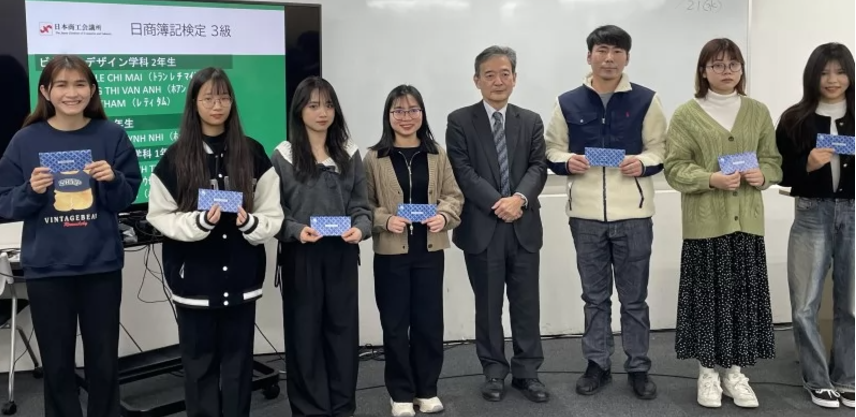資格表彰式
学園生活サポート
安心のビザ申請サポート

留学生へは経験豊富なビザ担当が一人ひとり面談しながら留学ビザの 更新を行います。 また、就労ビザやワーキングホリデービザからの変更も相談できます。
※適正校は留学生の在籍管理が適正に行われていると認められる教育機関です。 原則としてビザ更新時に提出する書類が簡素化され、卒業までの在留期間（約２年間）が認められます。
住まい
中央情報専門学校では、学校周辺のアパートを親切に紹介してくれる不動産企業や、学校周辺のシェアハウスを紹介しています。 オンラインでの部屋の見学や、契約まで相談に乗って手伝ってくれますので 、住まいを決めるのも安心です。
【紹介できる部屋の例】
▼月3.5万円以下のアパート（初期費用 9万円程度）
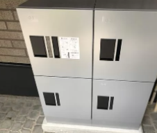
▼月3.5万円～4万円のアパート（初期費用 11万円程度）
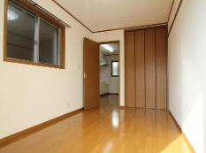 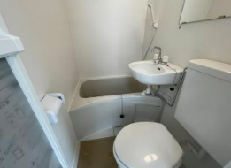 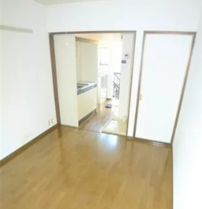▼月4万円以上のアパート（初期費用 13万円程度）
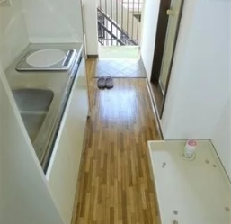 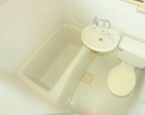 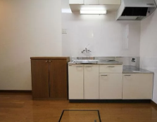 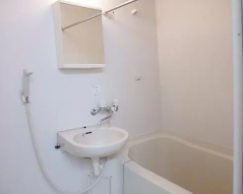 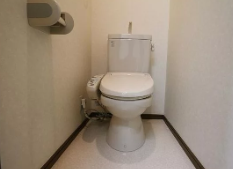【紹介できるシェアハウスの例】
シェアハウスでは、自分の部屋は一人で住みますが、キッチン、トイレ、 シャワールームは他の居住者と共用します。
家賃：4万円～7万円（場所によって違います）
初期費用：10万円程度
▼新座のシェアハウスの例
▼成増のシェアハウスの例
アルバイト
中央情報専門学校では、学校周辺で留学生でもできるアルバイト求人を紹介しています。 中には就職につながるアルバイトもあります。
DJI JAPAN株式会社（ドローンメーカー）
DJI JAPAN株式会社（ドローンメーカー）
多彩な能力を育成する魅力ある授業
学生が自ら考え、課題を解決する授業で、思考力、判断力、表現力、 主体性、多様性、協働性を育成します。
全学科共通科目の「情報学基礎」「総合教養」
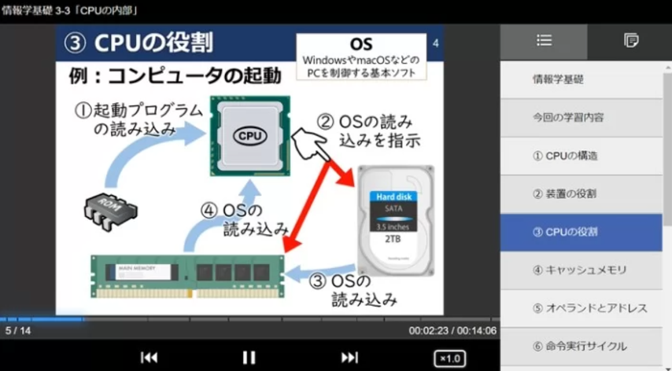オリジナル動画コンテンツ
2022年度より「情報学基礎」「総合教養」を学園IT系学科、 ビジネス系学科共通科目としています。 「IT・AIの基本がわかるビジネス系学生」、 「経営の基本がわかるIT・AI系学生」を育成します。
内容例
- 情報メディア・コンピュータの歴史
- テクノロジー
- 現代～未来のデジタル社会
- ハードウェア／ソフトウェア
- ICT、AI、経営、ビジネススキルの学び方
- 専門職業人としての教養
全員参加のプレゼンテーション大会
プレゼンテーション大会では、全学生が学校で学んだIT・AI・ ビジネスの知識を活用し発表をすることでスキルを向上し、 ビジネスや社会貢献に関するアイデアを創造・提案する力を育てます。 クラス発表で勝ち進んだ学生やチームはグランプリ大会で全校生徒の前 で発表をし、 企業の担当者からの高い評価をもらうことができます。
学生はメダル獲得を目指して積極的にレベルの高い作品作りをしています。
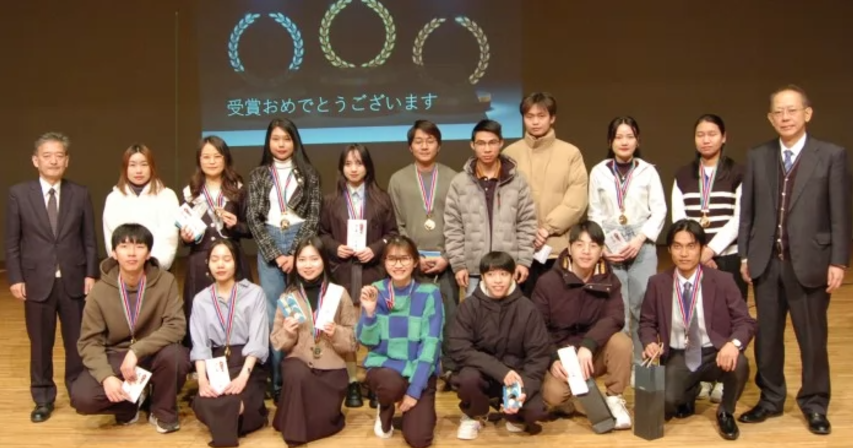 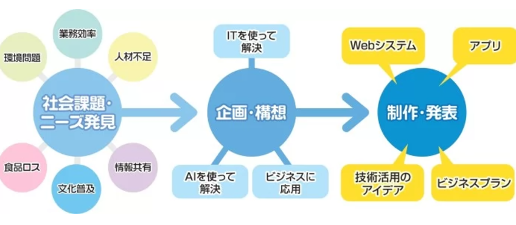 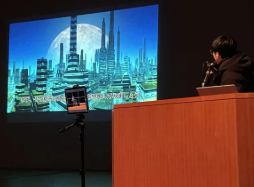1年生IT制作部門（技術）1位
「AIによる都市とは」
1年生IT制作部門（社会的課題解決）1位
「宇宙旅行」
1年生プレゼン部門（社会的課題解決）1位
「料理を科学する」
「マイPC」の推進による全教室でのICT利用
学生は授業でも自宅学習でも自分のノートPC「マイPC」 を使っており、全館WiFiシステム完備により、 クラウド環境を利用した授業が受けられます。
全教室に大型ディスプレイを配置し、 テレビ会議によるオンライン授業も行えます。
 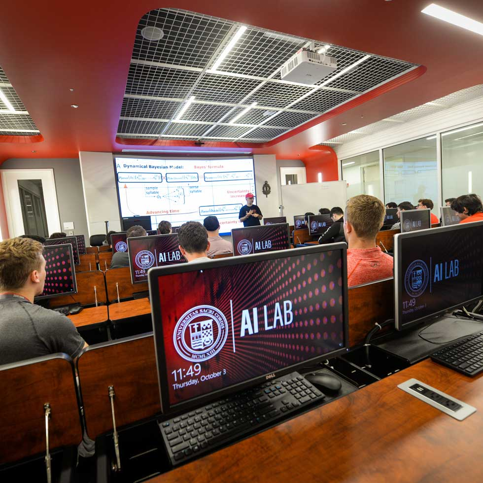
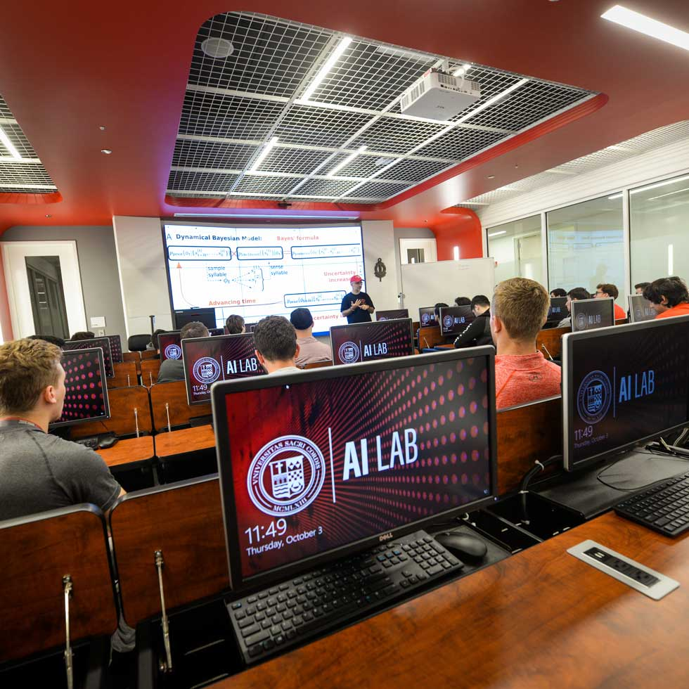
マイPCと最新の機材で実習をサポートしています。
Microsoft365クラウド環境を日常的に利用
全員がOfficeソフトを活用
一人あたり5台の端末にOfficeソフトをインストールでき、クラウド環境の様々なサービスを使用できます。 家で課題に取り組んだり、 作品の制作・共有に活用することで、情報活用能力が身につきます。
円滑なコミュニケーション
学生同士・学生と教員とのコミュニケーションがTeamsで簡単にできます。 学校の最新情報が学生ポータルで確認できたり、 各種申請がオンラインでできるなど迅速な教育・サービスを提供しています。
eラーニングで学習をサポート
学生の興味に合わせて授業以外でも積極的に自主学習ができるよう、最新のコンテンツを利用できる環境を提供しています。 現在学生に提供しているサービスの例を紹介します。
ゲームを通して楽しく本格的にプログラミングを学習。 初歩から着実にステップアップできます。 日本初の公式導入校。
好きな講座を選んでスキルアップ。 Java、Python、データベース等幅広く学べます。
プログラミング能力を測定してくれるサービスで自分のスキルを確認。 コンテストにも参加できます。
承認講師の指導のもと、機械学習を学び 、AWS Certified Cloud Practitionerの資格取得を目指します。
AI・データサイエンスの学習を基礎学習から、 実例データを使ったトレーニング、 コンペティション参加までサポートします。
AI解析システムが発音を評価する発話トレーニ ングシステムを使ってきれいな発音による会話力を向上できます。